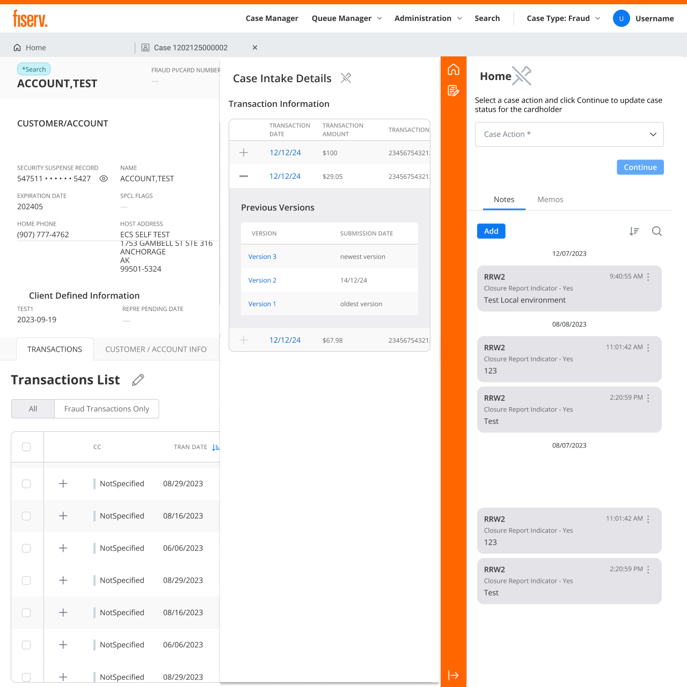
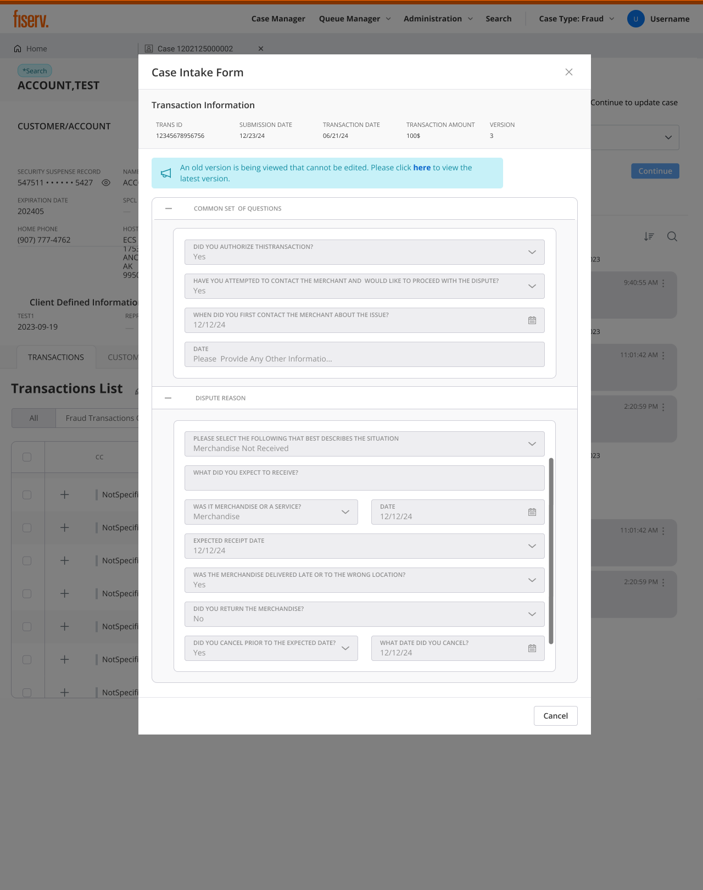
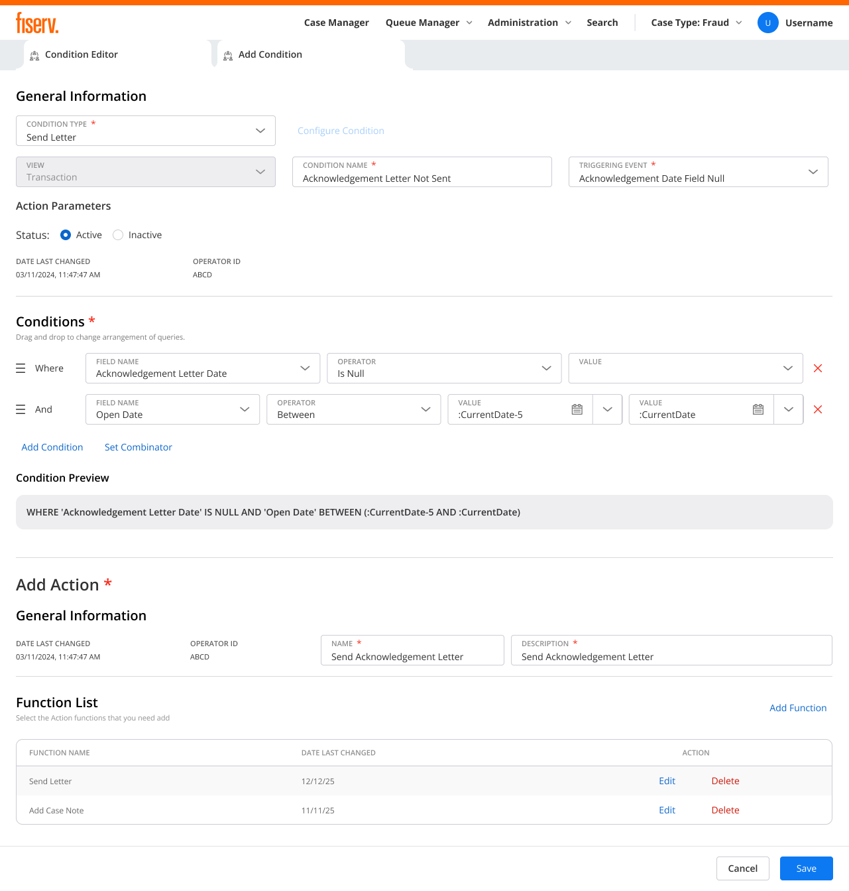
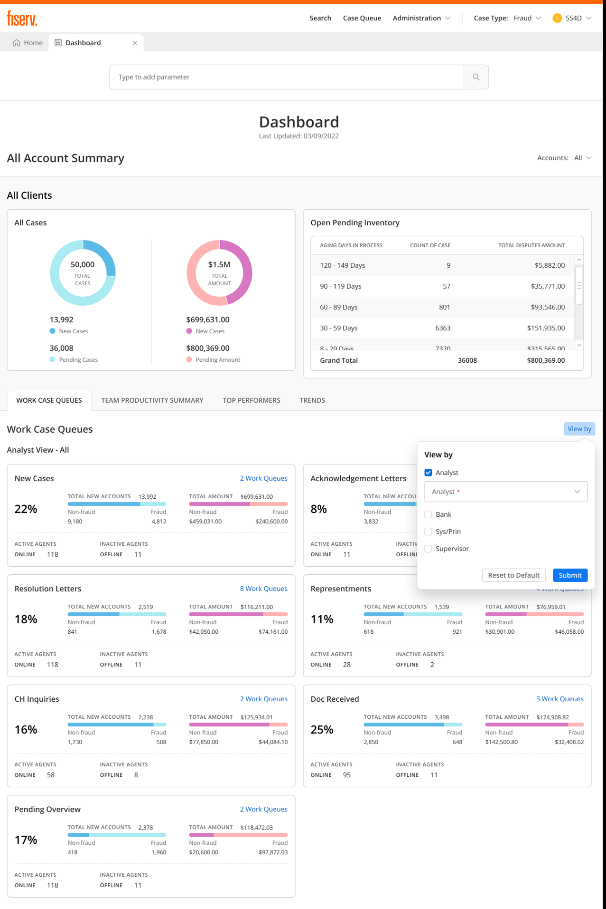
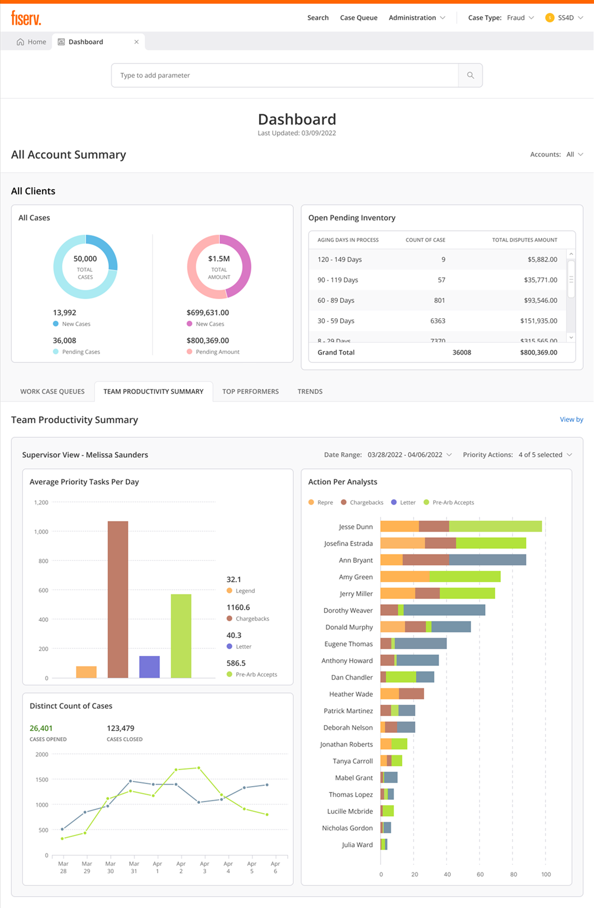

Project overview
The product
DWS serves the people who keep card disputes moving: call-center agents taking the first call, fraud analysts investigating suspicious activity, dispute processors working queues, and compliance officers auditing every decision. The legacy system they relied on had grown brittle, slow to navigate, easy to get wrong, expensive to train on.
The mandate
Redesign a legacy dispute-management system to reduce operational costs, improve accuracy, and maintain regulatory compliance, while introducing AI-assisted intelligence in a way that preserves trust. Balancing innovation and compliance was the defining constraint: modern AI capability, full auditability.
Create an intelligent, user-centered dispute management experience that reduces cognitive load, accelerates accurate decision-making, and introduces AI assistance in a way that builds trust rather than erodes it.

My role
As the UX designer on the Disputes Workspace modernization, I owned the complete design lifecycle, from research and strategy through delivery and post-launch refinement.
As the sole designer on an enterprise application, I owned more than screens. I put UX into sprint planning, spoke for the four user roles in rooms where none of them were present, and argued the AI-transparency principles before a single screen was drawn.
A visual refresh wouldn't fix it. The workflow had to change.
The legacy system increased processing costs, created compliance risk, and made customer calls harder. A visual refresh would not solve those problems. The workflow and information structure needed to change.
A misclassified dispute does not fail loudly. It clears intake, sits in the wrong queue, and surfaces weeks later as a Reg E deadline the bank has already missed. By then the institution eats the loss, the cardholder is still out their money, and a compliance reviewer is reconstructing what happened from screens that never agreed in the first place. With each agent holding 30 to 50 open cases against FCBA and Reg E clocks, a small wrong turn at intake compounded fast.
Manual, error-prone intake
Agents classified disputes by hand while customers waited on the line. Misclassifications surfaced far downstream, where they were costly to correct.
Fragmented context
Investigating a single case meant hopping between screens. No persistent context panel; key transaction data buried in unexpected places.
No way to work at volume
Routine disputes and complex ones flowed through the same one-at-a-time workflow. No bulk actions, no intelligent routing, no prioritization.
One interface, four jobs
Agents, analysts, processors, and compliance officers all used the same screens, optimized for none of them, with weeks of training to compensate.
No user access, so I built the evidence from every channel I could get
Due to client-access constraints and the enterprise B2B nature of the system, direct research with call-center agents and processors wasn't feasible. I built the evidence base through every channel I could get: internal stakeholders and subject-matter experts with deep domain knowledge of dispute operations.
Stakeholder interviews
Extensive sessions with product managers, operations leaders, and compliance officers with direct visibility into user pain points.
SME walkthroughs
Design walkthroughs with subject-matter experts who understood end-user workflows, validating patterns before they hardened.
System archaeology
Reviewed system documentation, workflow diagrams, and operational reports to map the current state and its failure points.
Four roles, four different jobs
"I just want the system to guide me so I don't mess up. I don't have time to look up rules while a customer is on the phone."
Research constraint: I could not observe agents directly. I treated stakeholder findings as assumptions, then checked them through SME walkthroughs and post-release feedback.
What the research kept saying
Speed vs. accuracy is the central tension
SMEs described agents under pressure to work quickly while fearing costly mistakes. The design had to optimize for both speed and confidence, not trade one for the other.
AI trust requires transparency
SMEs reported agents would be skeptical of "black box" AI recommendations. They would need to understand why the system suggested something before acting on it.
Four personas can't share one workflow
Rather than compromising on a middle-ground solution that satisfied no one, the system needed role-specific experiences sharing a common design language.
Actionable clarity beats technical accuracy
A raw confidence percentage means nothing to someone deciding whether to trust a suggestion. Plain guidance, high, medium, low, and what to do about it, does. (See the design process for how this reshaped the confidence indicator.)
Design process
Research set the priorities. I mapped the information architecture, built reusable patterns, and tested high-fidelity flows, then carried them through requirements reviews, sprint refinement, QA feedback, and release validation. The design did not stop at handoff. It kept moving as engineering and QA pushed back and edge cases surfaced.
Structure first
I established which information should be visible at each workflow stage and what could be progressively disclosed, the data-hierarchy decisions that made dense financial screens feel manageable. Interactive prototypes were validated through stakeholder reviews and SME walkthroughs throughout development, with QA collaboration catching edge cases early.
Solo at enterprise scale
As the only designer, I defined the AI transparency principles and designed the screens. I prioritized high-impact workflows, reused patterns, and validated decisions throughout delivery.
Initial AI confidence indicators used percentages ("85% confident"). Stakeholders flagged it: users wouldn't know when to trust the system. I redesigned to simple High / Medium / Low labels with contextual guidance, "High confidence: review and accept" vs. "Low confidence: manual review recommended." Technical accuracy matters less than actionable clarity.
Speed and accuracy pull against each other. Let AI auto-resolve and analysts stop trusting it; hold every case for manual review and volume collapses.
AI assists the judgment calls, and rule-bound automation handles the approved, repetitive actions a human already signed off on. The human owns every judgment, the audit log records who decided what, and the boundary between the two is always explicit.
Two constraints shaped every screen
Desjardins needed the whole workspace in Canadian French. French runs longer than English, so dense tables and forms that fit in one language broke in the other. Rather than patch screens one by one after translation, I externalized every UI string and built layouts that held their shape under text expansion.
Desjardins and Target were converting at the same time, each with their own reason-code coverage, permissions, and edge cases. I designed the patterns to absorb client-specific needs through configuration, so two large issuers could go live without forking the product into one-off screens.
AI handles the slow, mechanical intake. The agent keeps every decision.
AI belonged in the slow, mechanical parts of intake. It could read the dispute, suggest a classification, and check network rules while the customer was still on the line. The agent kept control of every decision.
That split is what made the workspace defensible. The system carried the network rules agents used to hold in their head, so intake stayed fast and consistent without taking the decision away from a person. Here is how it plays out across the dispute lifecycle.
Every piece below answers one of the four insights: AI-assisted intake and smart validation resolve the speed-vs-accuracy tension; explainable, overridable suggestions earn AI trust through transparency; role-based queues and views serve four personas without one compromised workflow; and high/medium/low confidence labels deliver actionable clarity over technical precision.
A dispute travels one path, intake to resolution. I mapped every stage to a single screen, the role that owns it, and a clear boundary for where AI assists and where a human decides, so the whole flow lives in one workspace instead of five disconnected systems.
Before a single screen, I restructured the app around the work users actually do, not the legacy system modules they used to juggle. Four top-level areas, each mapped to the lifecycle stages above and to the role that owns them.
The screens further down are a slice. The redesign reached across the whole dispute lifecycle, from how a case arrives to how it closes and gets audited. I designed or restructured each of these surfaces so the same patterns held end to end.
AI-assisted intake
The agent or cardholder describes the dispute in plain language, "I was charged $47.50 twice for the same Uber ride on March 3rd", and instead of the agent typing fields in by hand, an LLM extracts each one, amount, date, merchant, dispute type, and populates the case, with a card-network rules engine checking the classification. Every captured field carries its own confidence, high, medium, or low, so the agent knows which values to trust and which to verify before accepting or overriding. Whatever the cardholder entered at intake stays on the case to review, so no one re-asks for what was already provided.
Result: agents focus on the customer instead of typing fields by hand. No repetitive questioning, no manual lookup.
Case intake, inside the workspace
Agents can see exactly what the cardholder populated, transaction details and every question they answered during the dispute, without leaving the application. In the legacy system this meant breaking out to a separate place; here the full intake opens as a panel right over the case, with version history so the agent always knows which submission they're reading.
Result: no app-switching, no re-asking. The agent reviews and verifies the cardholder's own words in context.


Try the AI-assisted intake yourself
The same intake flow described above, running live. Describe a dispute in plain language and the classification, confidence, reasoning, and routing respond in real time. Accept the suggestion, or override it and stay in control.
describe a dispute in plain language: the classification, confidence, reasoning and routing respond live. accept it, or override it and stay in control.
The audit log, and an early read on the AI
Every intake records what the system captured, what it flagged low-confidence, and what the agent overrode or skipped. For compliance, that makes every AI decision traceable and defensible, exactly what a regulatory review asks for.
Result: because the tool is new, that same log is the metric: capture accuracy, override rate, and skipped-field rate show how well the AI performs in production and where to tune it next.
Read the AI deep dive: how the audit log became a feedback loop →Smart validation at the source
The system validates intake data against card-network rules in real time, for example, that a dispute is filed within the 60-day window for its transaction type. Errors get caught at intake, not three steps downstream.
Result: fewer classification errors and downstream corrections; analysts and processors spend their time on complex cases instead of fixing intake mistakes.
Tiered processing & bulk actions
Disputes route to queues by classification confidence and complexity: auto-approve eligible, standard processing, or dedicated review. Processors clear routine cases in bulk and give complex ones real attention.
Result: routine cases clear in bulk and effort goes where it matters, on the complex disputes that need a person.


Advanced search
The legacy system offered a basic name search: a single field, no parameters, no keyboard support. The redesign replaced it with a composable search where agents type to add parameters (account number, name, phone, SSN), navigate with keyboard shortcuts, and combine criteria to narrow results precisely. Drop-down guidance surfaces valid formats inline so agents never guess what to type.
Result: agents find cases faster, fewer dead-end searches, no switching to a separate lookup tool.


AI that shows its work
Every AI suggestion is visually distinct, blue tints, lightbulb icons, and always explainable. Users see why the system suggests a classification, what evidence supports it, and they can override with a reason. The boundaries are explicit: an LLM extracts and classifies, a rules engine validates, the system routes; humans decide.
Result: the interaction model made trust inspectable: every suggestion exposed reasoning, evidence, confidence, and a human override path.


Match Index: every document mapped to the case
During an investigation, evidence arrives from two directions: the card network and the cardholder. Agents needed one place to make sense of it. The Match Index lets an agent map each incoming document to the case, tag where it came from, and link it to the transaction or claim it supports, without leaving the workspace. Collapsible panels and contextual data keep the full transaction history in view while they work.
Result: complex investigations move faster, and evidence stays mapped to the case instead of scattered across inboxes and systems.
Role-based experiences, one design language
Each role gets an experience optimized for its job, navigation shows only relevant sections, workflows match mental models, while a single design system keeps maintenance sane and patterns transferable.


Transparency designed into every AI interaction. Human agency in every decision. Interfaces that build trust through explainability, because in high-stakes domains, AI should make humans more capable, not replace their judgment.
Chargebacks, without leaving the case
Filing a chargeback used to mean a separate system and memorized network rules. I built it into the case: the system checks chargeback rights and network timeframes before the agent commits, surfaces only the valid reason codes for that scenario and network (Visa, Mastercard), and tracks representment and arbitration responses right on the case timeline.
Result: designed so junior agents can handle chargebacks with confidence, deadlines are less likely to slip, and routine cases no longer wait on a specialist.

Bilingual from the foundation
A flagship Canadian client needed full English/French parity. Rather than retrofit it, I designed for it from the start: every string externalized for translation, and every layout pressure-tested for French text that runs roughly 30% longer, so labels, buttons, and table headers hold up without truncation or breakage in either language.
Result: built so the client could adopt without a late localization scramble, and so future-market expansion becomes a config change rather than a redesign.
A virtual analyst that works the queue on its own
A virtual analyst is a non-human operator. You define the actions it is allowed to take in the Action Editor, the queries that decide which cases it runs on in the Query Editor, then assign both to the operator. From there it works its assigned cases on its own. A client who needs an acknowledgement letter on every case does not staff that work, the virtual analyst sends one on each matching case. People set the rules and the boundaries, the operator handles the volume.
Result: rule-bound, repetitive work runs without a person in the loop, and agents spend their time on the cases that actually need judgment.



Resolving disputes before they become chargebacks
Not every dispute needs to travel the full chargeback path. When a cardholder disputes a charge, the workspace can send it to Ethoca, Mastercard's pre-dispute network, which notifies the merchant in near real time. The merchant can refund or cancel the order inside the alert window, and the dispute closes before a chargeback is ever filed.
Result: disputes can resolve at the source when eligible, so only the cases that truly need the formal process go there. The design aims at fewer chargebacks and faster outcomes for the cardholder.
Catching fraud before it posts
Cardholders often report a charge while it is still pending, before it posts to the account. Agents used to have no way to act on an authorization that had not settled, so the dispute waited, or slipped through. Match Authorization Charges to the Transaction List reconciles pending fraud authorizations against the posted transaction list as charges settle. The agent notes the dispute now, the system watches for the post, and the charge is marked fraud on the case the moment it lands.
Result: agents act the instant a cardholder reports a charge, even before it posts, and nothing is lost in the gap between authorization and posting.

Queries supervisors build, agents run at scale
A supervisor codifies a filter once in the Query Editor, say every fraud transaction over $100, sets which roles can use or modify it, and publishes it. Agents pull that saved query into the Case Manager instead of rebuilding the same filter by hand, then apply a case action across every matching case at once. The Execution Results screen reports back case by case, what succeeded and what failed, so a bulk action never hides a quiet error.
Result: expertise written by the people who have it, reused by the whole team. Routine work clears in bulk, and accountability survives the scale.


Supervisor oversight: the whole operation on one screen
Supervisors need to see aging risk, agent workload, and case status without switching tools. The dashboard surfaces all-account summary, open pending inventory bucketed by aging days (the view that catches cases before they miss a Reg E deadline), and real-time work-case queues with active and inactive agent counts. Team Productivity Summary charts average priority tasks per day and action breakdown per analyst, so supervisors see who is handling what without a separate reporting system.
Result: supervisors catch aging risk, see workload distribution, and track per-analyst output in one place. Accountability stays visible at scale.


Visual design & system
I built a design system for dense financial workflows, using semantic color, system fonts, and more than 50 components across 12 core workflows.
The design system helped one designer support an enterprise application without losing consistency. Engineers could assemble new screens from documented components while preserving the same usability and accessibility standards.
Impact: less tool-hopping, fewer screens, shallower navigation
The strongest verified outcome was workflow simplification. I anchor the case study on the metrics I can defend: tools consolidated, steps reduced, screens removed, navigation flattened, and tool switches eliminated.
Verified delivery scale
* Metrics reflect the verified resume-supported DWS evidence set.
Workflow simplification
* These are verified workflow metrics from the DWS evidence set.
Rollout and release quality
* Delivery and release-quality signals, not user-satisfaction claims.
What SMEs reported
Fraud analysts needed to see why the system flagged a case before trusting the recommendation. Explainability and override reasons became core interaction requirements.
Dispute processors needed routine cases to move faster without losing accuracy. Bulk actions and clearer intake validation reduced the amount of cleanup work pushed downstream.
Compliance teams needed every AI-assisted action to remain traceable and defensible. The audit trail made explainability part of the workflow, not a separate review artifact.
The pattern was clear: trust depended on visibility and control. AI suggestions had to show their reasoning, humans needed an explicit override path, and every correction needed to remain traceable for future review.
What this project taught me
Enterprise UX is strategic, not just visual
The most important work happened above the screen level: deciding where AI belonged, how people could trust it, and how four roles could share one system.
Users are smarter than we think
I worried that AI confidence levels and explainability details would overwhelm agents. SME feedback pointed the other way: what they couldn't use was vagueness, not detail.
Serve different needs without fragmenting
Role-specific experiences sharing one design language beat a middle-ground compromise that satisfied no one, flexibility without fragmenting the system.
A system helped one designer cover more ground
Strategic prioritization and a strong design system are what let one designer deliver an enterprise-scale application without quality collapsing.
What I'd do differently
Prototype AI patterns earlier. Low-fidelity explorations of confidence indicators and suggestion containers earlier in the process would have surfaced the percentage-confusion problem before hi-fi.
Document the system as thoroughly as I built it. The component library was comprehensive; its usage guidelines deserved the same rigor.
Study AI UX patterns beyond the domain. I researched dispute systems deeply but would invest more in how other enterprise products handle AI transparency.
Capturing every AI override to tune the model
Override-driven model improvement
The system captures when users override AI suggestions and why, a feedback loop for tuning the classification model. Future work could visualize these patterns for the teams tuning them.
Personalized assistance levels
Different users have different expertise and trust preferences. Future iterations could let users tune how much AI guidance they receive as their confidence grows.
Disputes Workspace was the hardest brief I have taken on. Real AI capability, strict regulatory limits, one designer, enterprise scale. It set how I work in high-stakes domains: the job is not to automate the decision away, it is to make the person making it faster and more sure.